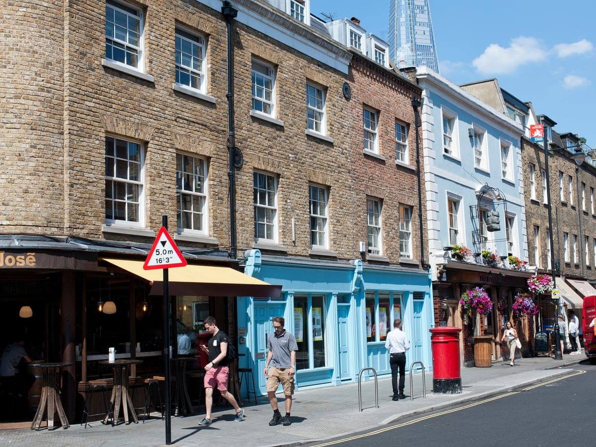
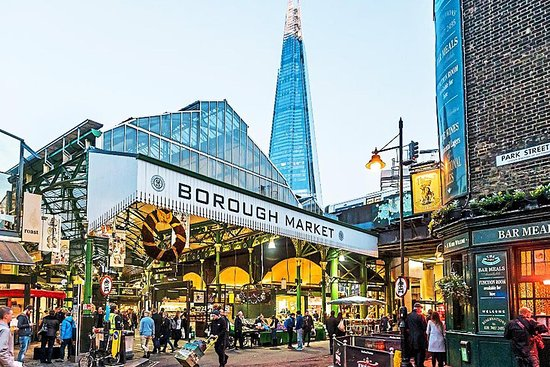
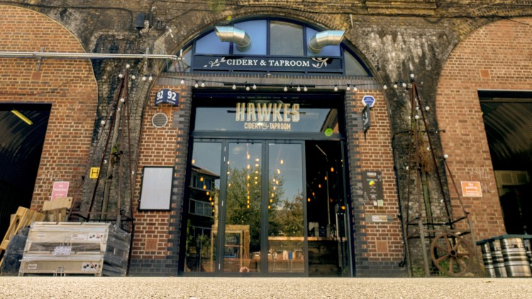
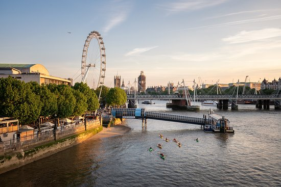
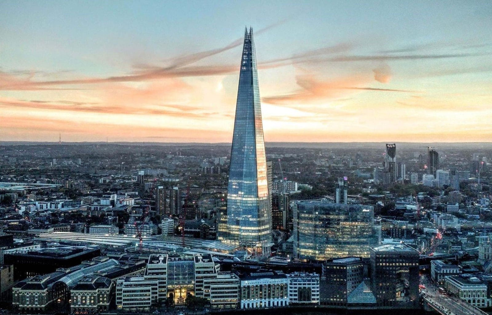
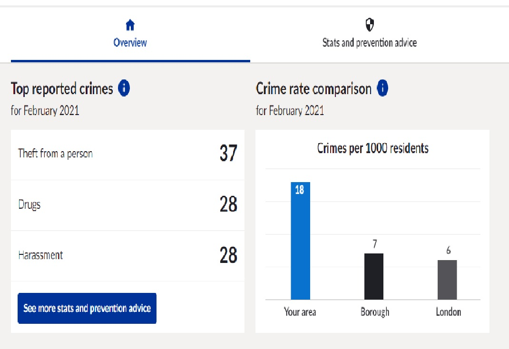
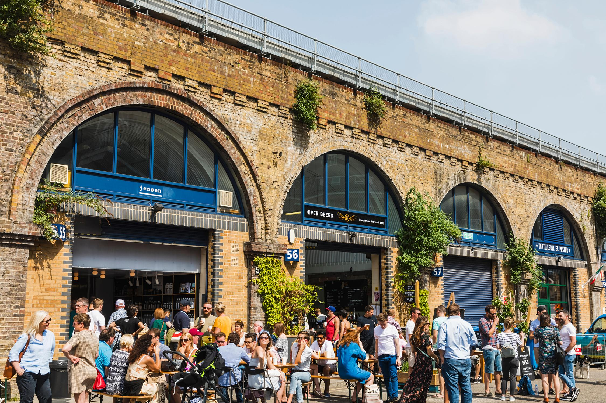
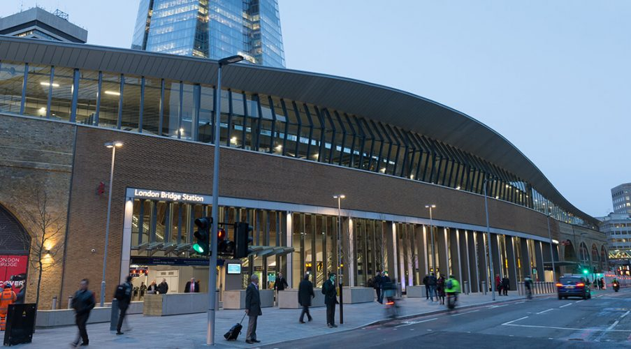

2021.04.22
欢迎来到伯蒙德赛！

最近球球们搬到了伯蒙德赛说（实话都是被
2019最宜居地点评选忽悠来的）。这里在1800s是一个温泉胜地，废弃后与南部其他地方一样
随时间破败。70年代左右一位设计师看上了附近废弃的厂房改造成别具工业风的高级住宅后吸引来
第一批中产阶级业主。因为其经济的房价，越来越多年轻人将这里作为探索伦敦的
落脚点。
有哪些好玩的
Borough market - 精品农副市场，可以买到一些少见的食材例如章鱼。

Beer mile - 喜欢艺术啤酒的了解一下

South bank - 河岸的步行街，景致不错，可以看到不少景点。往西逛可以进城，往东走一点就是The Shad步行街。

The Shard - 碎片大楼，顶层是香格里拉酒店，有中餐馆。

我们的经验
在伯蒙德赛居住的这半年整体体验还是不错的。向东部和伦敦城一样让我们看到了一种不一样的生活，有点土土的黑黑的，但有各种玻璃擦的亮亮的小店
小吃店和酒吧分布点缀在其中的主路或后街上等着你去发现。如果有机会可以订老厂房改的民宿体验下工业风，这边生活成本低，治安相对于同样价格的
位置好，每天步行进城锻炼身体还可以一探究竟真正的南区生活是怎样的（路上会经过南华克腹地，但不用担心，只要是白天就很安全）。

治安
许多朋友们最关注的就是治安问题了，虽然与肯辛顿相比落后的远了些，但比东区平静许多
就我们住的这几个月还是没什么问题的。但只限于伯蒙德赛呦，南区其他地方还是晚上不要去的~
一些上班族喜欢周末穿成南区人的样子(bermondsey street style) 来伯蒙德赛体验"帮派"生活，他们并不危险。但要是看到成群结队的黑人
那就是真正的帮派了，附近也有白人小混混不过一般都不找事。

卫生
伯蒙德赛的整体卫生条件一般。桥洞底下有许多鸽子寄居，平时路面清扫次数少，由于曾经是工业区空气质量较差。但各家各户都把自己擦的窗明几净，
各种小酒馆和小吃店也相当精致，可以说是各扫门前雪。订民宿的话建议选新建的大楼。

交通
伦敦桥站 - 地铁 Jubilee和Northen 线
公交 47 343 381 N199 N381
火车 Southern, Thameslink, Southeastern
伯蒙德赛站 - 地铁 Jubilee 线
公交 47 108 188 381 c10 N199 N381
Druid street - 42 78 188
Bermondsey street - c10
Upnext...
2021.04.22